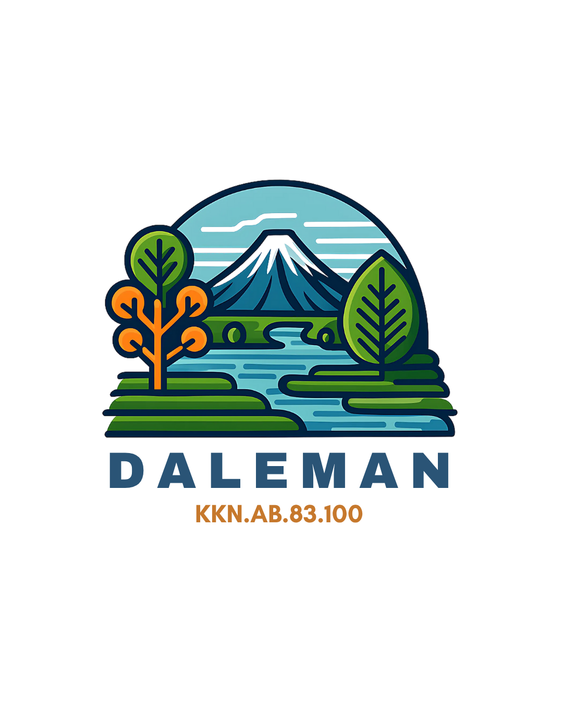

Logo
Kelompok Tani Dukuh Daleman
Apa Itu Kelompok Tani?
Kelompok Tani adalah wadah bagi para petani laki-laki atau bapak-bapak di Dukuh Daleman untuk berorganisasi, belajar bersama, serta mengembangkan praktik pertanian yang lebih produktif, berkelanjutan, dan berdaya saing.
Ketua

- Pak Kawadis
Kegiatan Kelompok Tani
Pelatihan Penggunaan Traktor
Melatih anggota mengoperasikan dan merawat traktor mini modern.
5 Februari 2025Gotong Royong Membersihkan Sawah
Kegiatan rutin bersama membersihkan saluran irigasi dan gulma di sawah.
18 Maret 2025Panen Raya
Panen padi bersama dan distribusi hasil untuk warga dan pasar lokal.
28 Juni 2025